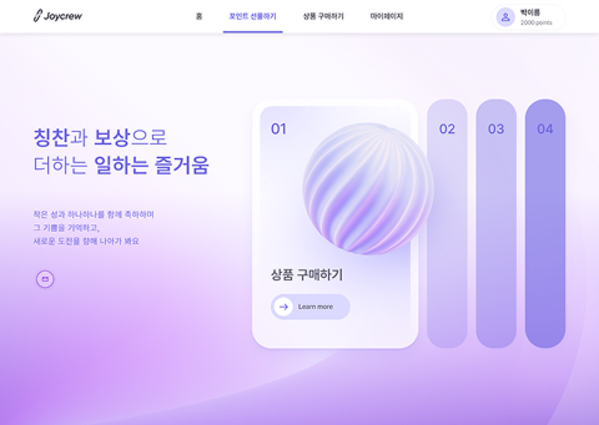

튜토리얼 RAG를 평가하고 관찰할 수 있는 CloudOps RAG로 확장하기
Hit@k와 MRR, threshold fallback, answer evaluation, failure taxonomy, FastAPI serving, dependency timeout, regression gate를 하나의 lifecycle로 연결합니다.
글 읽기Start here
기술 이름보다 설계 판단과 검증 과정이 선명한 글 세 편을 골랐습니다.
Latest
RDS Proxy를 붙이는 구성에서 더 나아가 연결 예산, pinning 회귀, 부하 테스트, 장애조치와 운영 책임까지 설계합니다.
로그를 한 버킷에 모으는 구성에서 더 나아가 계정 온보딩, 최소 권한, 무결성, 수집 지연, 비용과 운영 책임까지 설계합니다.
외부 업체에 장기 Access Key를 넘기지 않고 접근을 위임하려면 IAM User 복제가 아니라 Cross-Account Role과 STS AssumeRole을 설계해야 합니다.
VPC 수가 늘어나면 peering connection과 route 관리가 N²에 가깝게 복잡해집니다. Transit Gateway로 중앙 routing layer와 segmentation을 설계합니다.
보안 정책은 탐지만으로 끝나지 않습니다. IAM으로 예방하고, AWS Config로 평가하고, Systems Manager로 안전하게 복구하는 운영 loop를 설계합니다.
사람의 AWS 계정 접근은 IAM Identity Center로, EC2 OS 접근은 Session Manager로 분리해 외부 운영 인력의 접근 경계를 관리합니다.
주문·결제 데이터와 상품 이미지는 같은 복제 전략을 쓰기 어렵습니다. Aurora Global Database와 S3 CRR로 데이터 유형별 DR 경계를 나눕니다.
Selected projects
역할을 부풀리기보다, 직접 구현한 경계와 확인한 결과를 분리해 적었습니다.

JoyLab Founder로 기업용 포인트 기반 복지·리워드 SaaS를 기획하고 개발했습니다. 포인트·결제 백엔드와 EKS 배포·모니터링 구조를 구현하고 실제 기업 베타 테스트로 멀티테넌트 운영 경계를 검증했습니다.
Topics
현재 글 수에서는 별도 검색 인프라보다 주제별 진입점과 정적 검색이 더 빠르고 유지하기 쉽습니다.
About
Software Engineer · Backend / Cloud / AI Systems
구현한 기능보다 어떤 제약을 보고 경계를 나눴는지, 결과를 무엇으로 확인했는지에 관심이 많습니다. JoyLab에서는 B2B SaaS의 백엔드와 EKS 운영 구조를 만들었고, 프로젝트와 기술 글에서는 측정한 결과와 아직 검증하지 않은 영역을 구분해 기록합니다.